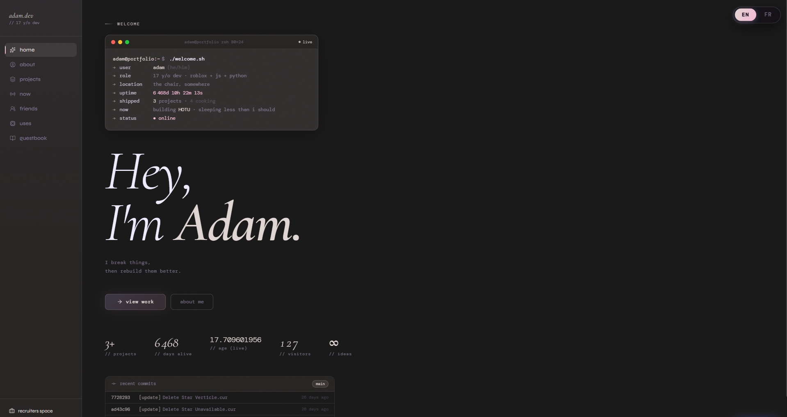

Lumen
Mon projet actuel d’outils personnels pour Deepwoken Playground.
Développeur · étudiant en première année de BTS SIO
Je suis en première année de BTS SIO et je prévois de choisir la spécialisation SISR. En parallèle de mes études, je développe des sites web, de petits jeux Luau et des outils personnels.
Je recherche une alternance autour de Nantes pour la rentrée 2027, en développement web ou logiciel. Je continue également à apprendre C#.
JavaScript · PHP · Lua/Luau
HTML · CSS · C# · Python
Approfondissement de C#
HTML · CSS
Node.js · Express · SQLite
REST APIs · OAuth
Git · GitHub · VS Code
Linux · WSL
Premiere Pro · Krita
Mon projet actuel d’outils personnels pour Deepwoken Playground.
De petits projets de jeux et des expérimentations développés en parallèle de mes études.
Luau

Création d’un portfolio et d’un CMS sur mesure pour un client créatif. Administration authentifiée, gestion des projets et des médias, intégration Cloudinary.
PHP · JavaScript · Cloudinary

Conception et développement de ce portfolio : activité en direct, galeries de projets et navigation au clavier.
HTML · CSS · JavaScript · Cloudflare D1 · Discord OAuth

Participation à un jeu de parkour Roblox en équipe, inspiré d’Abyss World. Ma contribution porte surtout sur la correction de bugs. Le jeu propose un système d’élan et plusieurs zones.
Lua · Roblox · Ancienne contribution — je ne participe plus au projet
Un outil Windows pour passer entre des profils de travail, de concentration et de détente avec des raccourcis ou la voix.
Python · Flask · Windows
Automatisations Python configurables pour la maintenance planifiée et les tâches de modération.
Python · APIs · Tâches planifiées